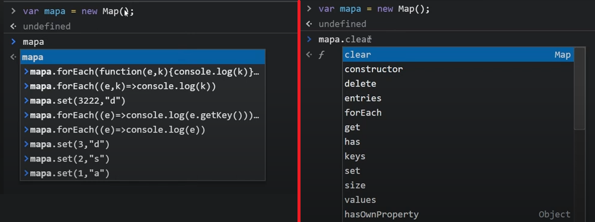

Set: podemos usarlo para eliminar los elementos repetidos de un array al transformarlos en un set, por ejemplo haciendo "var SetNumeros = new Set (numeros)" estaríamos guardando en nuestro Set solo los valores que no están repetidos del array numeros.
array.split(""): devuelve un nuevo array con los elementos del array original separados por el separador que le pasas como argumento. Ver más
Se crean como vemos en la imagen a continuación y podemos acceder a sus métodos para trabajar con este conjunto de datos. Son muy similares en la estructura a un Json.
Por ejemplo el método mapa.set(key,value): mediante el cual se almacena un valor asociado a una clave en el mapa.

Si quisiéramos acceder a un elemento del mapa lo hacemos con el comando .get(key):
console.log(mapa.get(key0)); nos mostraría el elemento asignado a la clave "key0".